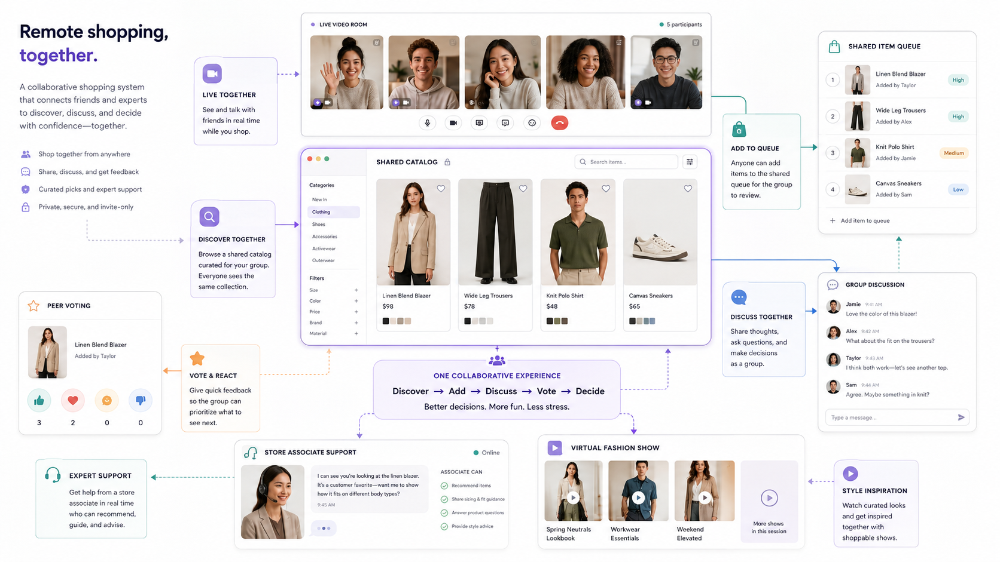

Remote Shopping, Together
Reimagining social retail when friends, family, and experts could not share the same store — a live video room wrapped around a synchronized retailer catalog. Also, named the winner of the Nordstrom Hackathon that year.

What was lost when shopping moved online? Retailers preserved search, compare, cart, and checkout. What was harder to preserve was the social environment surrounding those actions.
A private, collaborative shopping environment built around a live video room and a synchronized retailer catalog — browse together, queue items, discuss, vote, invite an associate, and save privately.
A working end-to-end prototype, demonstrated from inside its own embedded video call. First Place and the People's Choice Award.
Better decisions. More fun. Less stress.
E-commerce kept the transaction and lost the room
Traditional e-commerce worked well when a customer already knew what they wanted. It was far less effective at reproducing collaborative discovery and real-time social decision-making. Under pandemic restrictions, five familiar behaviors quietly disappeared.
Immediate reassurance
A shopper could no longer step out of a fitting room and ask a friend whether an outfit worked. Screenshots and group messages were a workaround, but they fragmented the experience across apps and separated the product from the conversation.
Shared discovery
Shopping with someone changed which products entered consideration at all. A friend might notice something you'd never search for, or suggest an alternative based on knowledge no recommendation algorithm possessed.
Participation in major purchases
Wedding attire, graduation clothing, gifts, and formalwear involve people who are emotionally important to the decision. Restrictions removed both the store visit and those people.
Contextual expert guidance
Associates could answer questions about fit, materials, availability, and alternatives while the customer was actively considering a product. Online support was disconnected from the shopper's current context and group discussion.
Shared retail events
Fashion shows, product launches, and demonstrations moved online — but product discovery and event viewing stayed in separate places, so watching together and shopping together never met.
…help people discover, discuss, and confidently evaluate products together when they cannot be physically present in the same store?
Three days, so research was directional
I ran brief interviews before committing the team to the concept. The objective was never to establish broad market demand — it was to determine whether the loss of social shopping was recognizable, and which situations would benefit most from a shared experience.
Milestone shopping
One participant connected the concept immediately to wedding-dress shopping. These purchases depend on friends and family — and the pandemic intensified an existing problem for people whose support networks already lived in other cities or countries.
In-the-moment evaluation
Another wanted a faster way to ask for opinions while considering an outfit. Not a lengthy consultation — immediate feedback, while the item and the decision were still in view.
Shared discoverability
Shopping together was never limited to approving a final choice. It also meant noticing what someone else found, and exploring possibilities you wouldn't have reached alone.
Familiar, lightweight interactions
A designer pushed for recognizable retail and conferencing patterns with minimal load time. The concept already combined video, browsing, messaging, voting, and carts — an unfamiliar navigation model would sink a short session.
Not synchronized checkout — synchronized consideration
The interviews pointed at a single reframe. Users needed a shared environment where products could become the subject of live conversation, without making the final purchase decision public or collective.
The opportunity was not synchronized checkout. It was synchronized consideration.
Keep conversation central
The video room anchors the experience. Browsing, voting, discussion, and expert support strengthen the conversation rather than compete with it.
Create shared product context
Participants see the same products without repeatedly exchanging links or screenshots.
Separate review from purchase
Products need a shared staging area the group can evaluate — without dropping items into someone else's cart.
Preserve individual agency
Someone might back a product for another person without wanting it themselves — or save something without announcing it.
Make expert help optional
Associates are available for specific questions, but shouldn't sit inside every private social interaction.
Keep checkout private
Discussion is shared. Payment, shipping, sizing history, account info, and the final decision stay individual.
A social activity supported by commerce
The concept became a connected set of tools organized around a live video room. The room stayed the visual center on purpose: this was designed as a social activity supported by commerce, not a storefront with video bolted on.
Building something that actually ran
The team chose technologies that let us ship a functioning prototype inside three days — established platforms for the hard infrastructure, so our time went to the retail interactions.
Interface
Reusable components for video containers, product cards, queue entries, voting controls, discussion panels, participant states, associate-support views, and event modules.
Live conferencing
An established communications platform meant we focused on retail interactions instead of building custom video infrastructure.
Shared session state
Queued products, votes and reactions, discussion entries, session membership, item priority, anonymous or attributed submissions, and saved products.
Retail connection
Connected the prototype to internal retail product pages, so the experience drew from a real catalog rather than demo content.
- A host creates an invite-only shopping room
- Friends or family join the live video call
- Participants browse the shared catalog
- Any participant adds a product to the shared queue
- The group discusses and votes on the item
- An associate can be invited for guidance
- Participants privately save products to personal carts
- The group reviews unresolved items before ending
- Each participant returns to an individual checkout
Because the hackathon itself was remote, we demonstrated the product from inside another conference call. The judges joined the official hackathon call; the team opened a second video-shopping call inside the prototype.
The nested setup was unusual, but it proved the central experience worked. Judges seemed most interested that we had produced a functioning end-to-end system rather than a static design concept.
First Place · People's Choice Award
Eight capabilities, one conversation
The final prototype connected eight primary capabilities into a single collaborative experience.
Live video room
Friends, family, and experts talk while shopping.
Shared catalog
Browse connected retailer products from one session.
Shared item queue
Collect and prioritize products for group review.
Group discussion
Ask, compare, and keep the product in context.
Peer voting
Lightweight reactions surface what deserves attention.
Associate support
Retail experts enter temporarily for contextual guidance.
Virtual events
Watch curated shows and shop the related products.
Private carts
Participants control what they save or purchase.
Collaborative consideration
Everyone can add, prioritize, discuss, and vote. The group shapes what gets attention.
Private intent
Only you decide what you save and what you buy. Payment and checkout stay individual.
Separating the two let the platform support social influence without making the final purchase decision collective.
- Families living in different regions
- People with limited mobility
- Wedding and formalwear shopping
- Group gift selection
- Personal styling
- International retail events
- Customers seeking specialist guidance
- People unable to spend long periods in stores
The team also built an early model suggesting the service could potentially offset its operating costs through increased conversion, broader product discovery, associate-supported purchasing, and event-linked sales.
This remained speculative. The hackathon included no controlled sales pilot, no long-term usage data, and no complete financial analysis.
It worked because we narrowed the problem
We did not try to recreate every aspect of a physical store. We focused on one activity conventional e-commerce did not support well: discussing products with other people while the decision was still unfolding.
The central video room reinforced that focus — discovery, discussion, voting, expert guidance, and event content were organized around the conversation rather than presented as disconnected services. The three-day constraint forced the same discipline on the build: established communication and cloud technologies, familiar interaction patterns, and only the features required to demonstrate the end-to-end concept.
- Group voting could create unwanted social pressure
- Anonymous submissions could be misused
- Participants would need granular privacy controls
- Associate incentives could conflict with customer interests
- The combined video, catalog, voting, and discussion interface would require extensive accessibility testing
- Moderation controls would be necessary for removal, blocking, and reporting
- Shared payment and combined checkout would introduce unnecessary financial and privacy complexity
Test lighter collaboration modes
Is a continuous video call what people actually want? Long sessions may suit wedding attire or fashion events, while everyday purchases might do better with temporary product rooms, asynchronous reactions, short video requests, or scheduled consultations.
Measure more than conversion
Decision confidence, participant enjoyment, products discovered through others, return rates, session completion, comfort disagreeing with the group, and willingness to use the service outside pandemic conditions.
Digital retail does not need to imitate the visual appearance of a physical store. It needs to identify which human interactions made the physical experience valuable — and reconstruct those deliberately.
COMPANY HACKATHON · FALL 2021 · 1ST PLACE & PEOPLE'S CHOICE
PRODUCT LEAD · 3 ENGINEERS · 1 DATA SCIENTIST